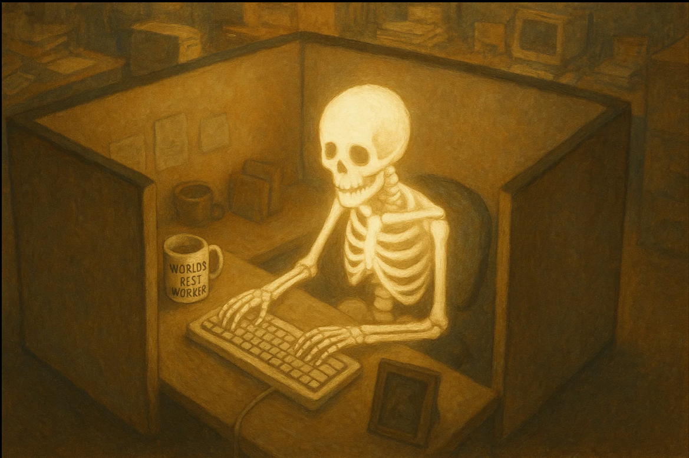
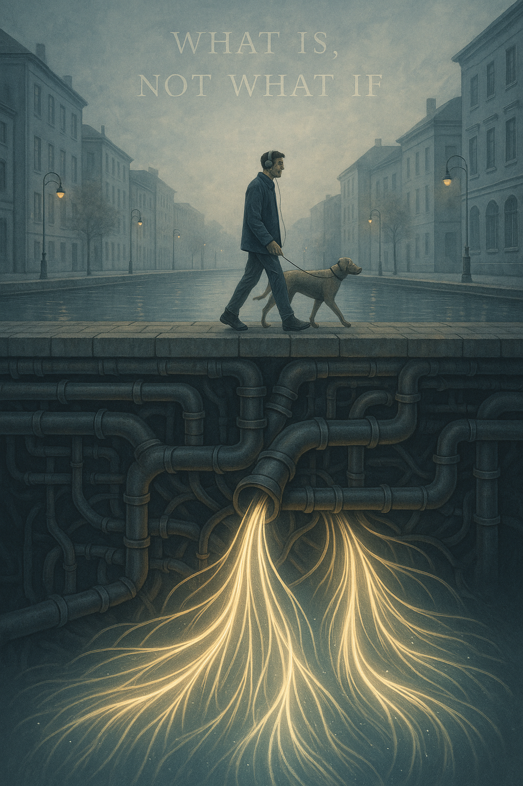
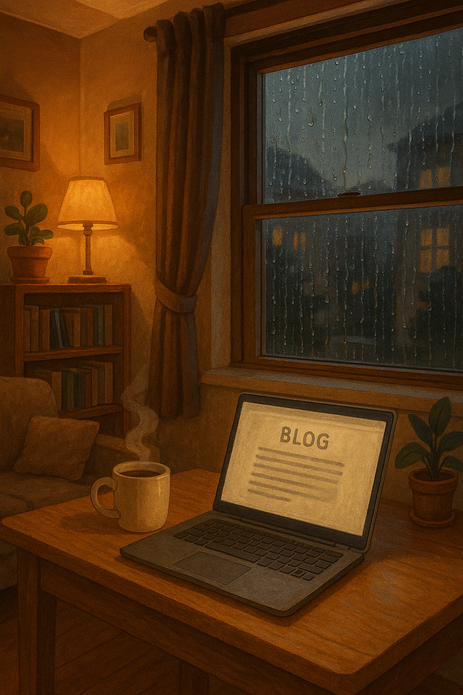
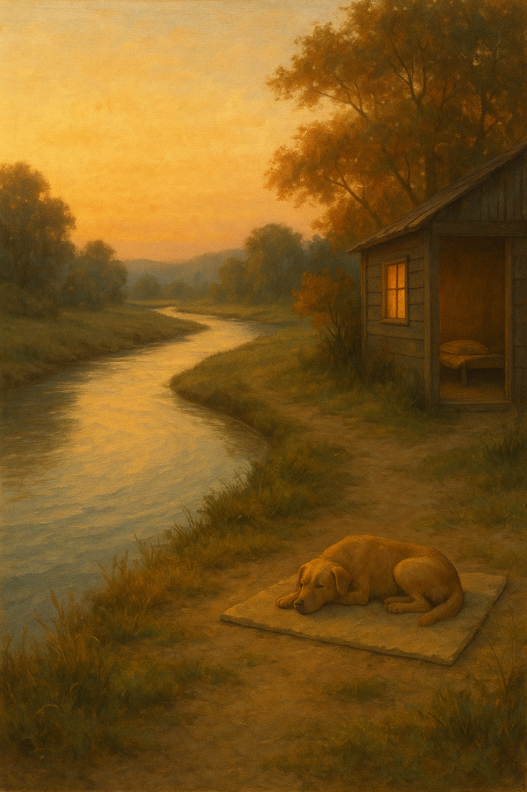

Weekly News
"Welcome to my side of the site where I give frequent updates on my life, and for career."
New Job!
August 24th, 2025
"So I was able to secure a job with Intergity Staffing Solutions to work as a data entry clerk for JP Morgan Chase Bank. I will work in a secure area, and be destined to type."
"I have been using typeracer.com to help, and relaxing with singleplayer games recently since news and since haven't started it yet. I'm just going to practice and relax till first day."
"Overall, just happy, and the pay is same as UPS, but I get a full time schedule and get to type away."
"Thank you for reading my first post!" || Loki ||

Chess And Life
August 25th, 2025
"We created a club on Lichess.com, and made it for the Louisville area, and hope to achieve great things with this club. It mainly will be online for now, and then it will introduce real events. I hope to meet great people, and help start the chess craze here again. If around the state, or area, send a request!
vv Link Here vv Lichess.com
"I also, got my fingers scanned for the new job, and the office was nice, and felt good to finally work for a good place, and know that this will be fun. They were impressed with my determination, and I'm going to continue showing it and get a full time position with their company."
"Thank you for reading my second post!" || Loki ||

Mental Health And Goals
August 26th, 2025
"Today was therapy day, and it went well, I was able to talk about how my goals are being accomplished, but not much is being celebrated. With such a turn of events in my life with the fact of going up in projections and then a dip, then going to a higher level then even the start and inital climb has been something to me. I don't feel that I give myself what I deserve. And this isn't just a game, or car, or food. This is that mental juice that keeps the soul alive you know? I feel that this has helped a lot this session, and due to condition I am going to apply for a medical card for cannabis."
"Other news, I was able to get Assassin’s Creed Origins for 7 $ on a Steam Sale, not some shady key store. I have enjoyed it, and really enjoy the progression factor they created. Had some few bugs that just make me laugh, and I get to remember, not recording, no live stream, just pure life you know."
Lastly, I have a chess match on Thursday with a friend, he's coming over to my area and we are going to play on my board and my timer and enjoy the night with some hemp. This has created a good bond between us due to him being from Columbia this has caused speech to be not our core technique. But with this we will talk, philosophy, society, and much more. I hope to teach him, and his name is Samuel. Hey, why not also invite him to the chess club! Another Kentuckian!
"Thank you for reading my third post!" || Loki ||
August 27th, 2025
"A new day! I already had this article prepped in my files at night, and will do the same to continue the motive. It's hard to wake up and do so much, I think I can wake up early and do a lot, but I learned I need to boot up, take time, walk my dog, and needing to get EveryDay Dose mushroom coffee. This will be a great September that's coming up."
"Work starts possibly 2nd week of September, and they are going to possibly have overtime. This means more time to prove my skills, and so far in 43 races, I am 93 WPM on Typeracer.com. My skill is getting better and never drop below 90% accuracy. I love how things are turning."
"I removed YouTube, Discord, and stepped back from media — it’s been healthy. It feels like stepping fully into adulthood, not halfway, not distracted by endless games. As a kid, I spent nights dreaming of League of Legends, and I pushed farther than anyone I knew. Later I met Elijah, who even went to school for free to play CSGO, which opened my eyes to how wide the world really is. Those chapters were valuable, but I’ve grown past living inside the screen. Now I focus on balance — reality, work, learning, and even a little help from Glerb (My AI Co-Pilot / ChatGPT Plus). That’s the life I’d love to watch from a hawk’s eye."
"Thank you for reading my fourth post!" || Loki ||
August 28th, 2025
"What a day, had to wait for apartment to send plumber a few days ago, and then we got him today, and just it's a story for real life. But lots of drama for work setting. We fixed it we think, but found a major componenet. Got a coffee at the front office for free and will go back for more in the morning. "
"I hanged out with Samuel, and was just not a match as friendships and life goals. So had to back out and step away and re collect and continue. It was a good day, nothing bad, just we don't actually make a good combo to move forward in life, and so was others in my life."
"I finished some school, did well, and did a test in intro to programming and got a 80/100 on it with just few not checking, but some how 2, but that's good I love seeing a good rough score shows I'm not perfect since I don't perfectly know it. I understand, can do, but still can't do the third, explain as well."
"Thank you for reading my fifth post!" || Loki ||
August 29th, 2025
"Had a leak again, but we found the problem, and we are lucky that it was our supply line pipe, if it was a main stream we would be flooding constantly. Or even worse is the whole building not having running water. So we got it layered and secured with glue and foil and the crack. The best part is when I talked to the plumber when checking it out, I pointed it out and he said "It's the way they made it when casting it..." something like that, and just that was where the leak came from. It was only happening when we did a load, so it's so good other apartments are safe, less work for the complex, and just happy people. My upstairs still loads more than they should, and they're older than me. So what a world."
"I also had a good moment in life when I found more peace. I am more calm, I had to clean the floods that were minor on some, and major on others. So dealing with them and never overreacting was key there. And it was my guide. I did have to take a big rest at night and just do nothing for a good time. Just darkness, no technology in my room, and just breathing, river thoughts and not an ocean or a crashing wave. It worked, and woke up great on the 30th."
"I'm also not going to do the same posts, so I can analyze what is important and what isn't. Some stuff may be a lot of work, and that day I would want to talk, but after thoughts and then letting go, I get to come back and go wow, this wasn't that big of a deal, like with plumbing, I had a minor flood, and yes had to clean much of the time, but my floors are clean it was soapy water and not dirty. I learned that I can clean any flood now in my apartment now and in the future with a carpet cleaner if I have hardwood floors. The reality is getting better, but it already was good, just my reality is getting better. And I hope yours is too."
"Thank you for reading my sixth post!" || Loki ||
August 30th, 2025
"Saturday was a good day, it was a time to relax and wake up with a calm mind. I have been thinking of more of my thoughts that must be constant at this point, so with this in mind I know I must return to a state of a river, and not a ocean or a waterfall. Moments will lead to a waterfall down the stream, but that's nature to create some more beauty."
"My dog had some sickies moments that night and was a scene for a doggy owner for the first time being now co named with her. Sophia. She was not looking too good and just had to use Glerb (My AI Co-Pilot) on how to diagnose, and she was in the clear, but due to my mental illnesses, I overthink and worry even if danger is no longer there. So from here was a moment of a dog owner to be serious, not brush it off too. Many ways to look at it, but I learned to move my room to the den in the living room section. Gives me a studio feel, and my foam mattress topper is on the floor almost from Asia Pacific style."
"Going to get a house in a year with my loan, and build more credit with my job. This temp job at Chase Bank is going to be amazing. I am going to show them who they really got! A developer, not a worker. 1 year, and maybe rent if needed, but we are not going to be in an apartment. When I was 18 I moved right out with roommates, they were somewhat good and somewhat bad, and even then I had a bad month one time. So it was like eh, I have gone up and down and even then I was the bill guy for my apartment. Due to my grandmother as a roommate due to her health I let her be a bill collector etc. So it's been a great time recently and I can't wait to really get what I need and what I want that is helpful for mental, and physical health."
